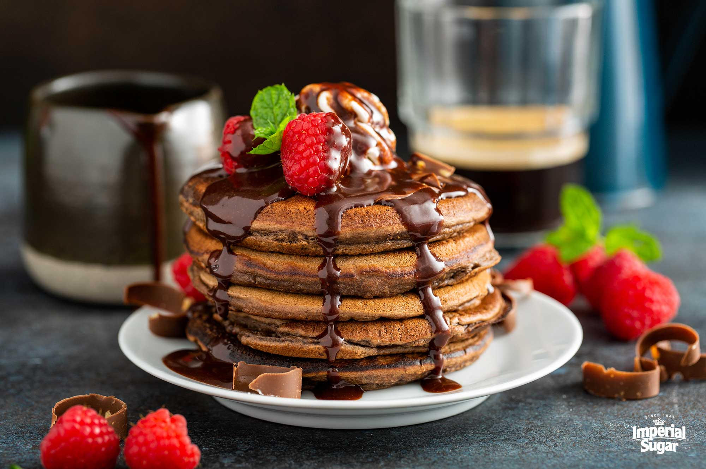

Chocolate Pancakes

Serve these chocolate treats warm with a sprinkling of powdered sugar or fresh strawberries.
Ingredients
- 1 1/4 cups all-purpose flour
- 1/4 cup unsweetened cocoa powder
- 3 tablespoons white sugar
- 1/4 teaspoon salt
- 2 eggs
- 1 1/4 cups of milk
- 1/2 teaspoon vanilla
- 2 tablespoons melted butter
- 1/2 cup semisweet chocolate chips
Steps
- Whisk flour, cocoa powder, sugar, and salt together in a large bowl.
Beat eggs, milk, and vanilla in another bowl;
mix in the melted butter.Pour the wet ingredients into the dry,
and mix just until combined. Stir in the chocolate chips.
- Heat a lightly oiled griddle or skillet over medium-high heat.
For each pancake, pour 1/4 cup batter on griddle and cook until bubbles pop in the center
of the pancake, about 2 to 3 minutes. Flip, and cook an additional minute on the opposite side.